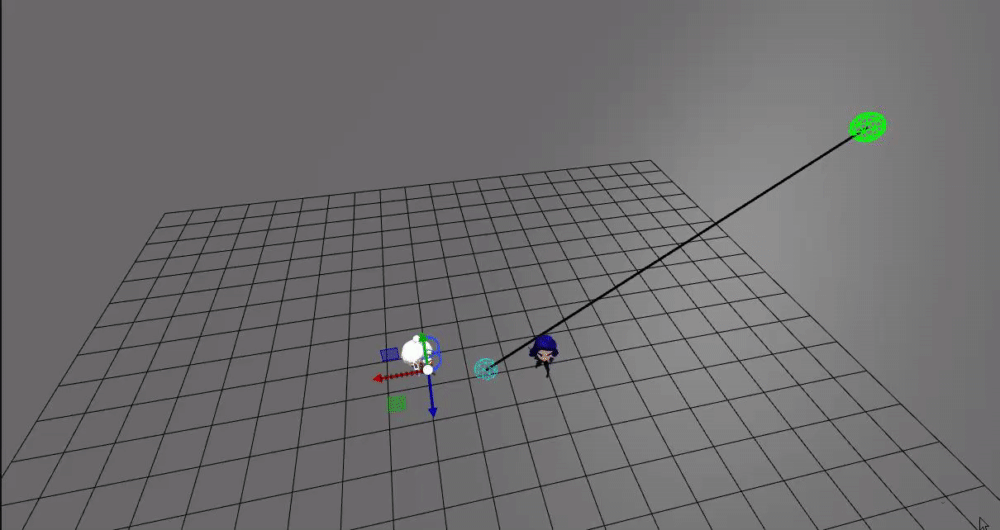
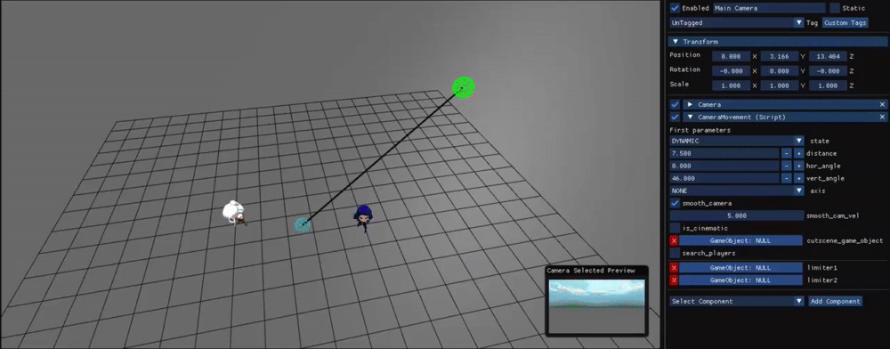
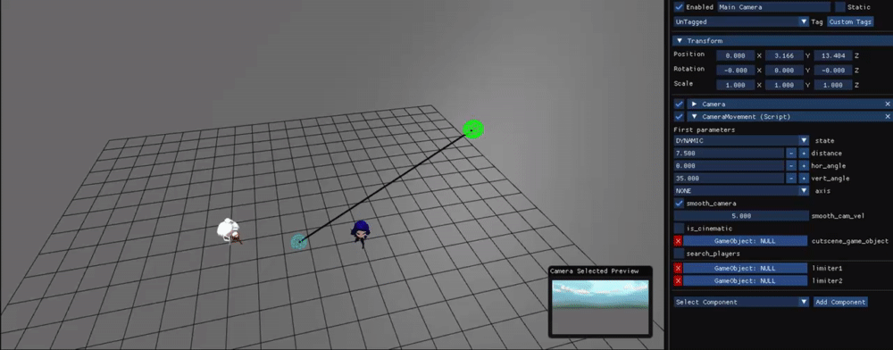
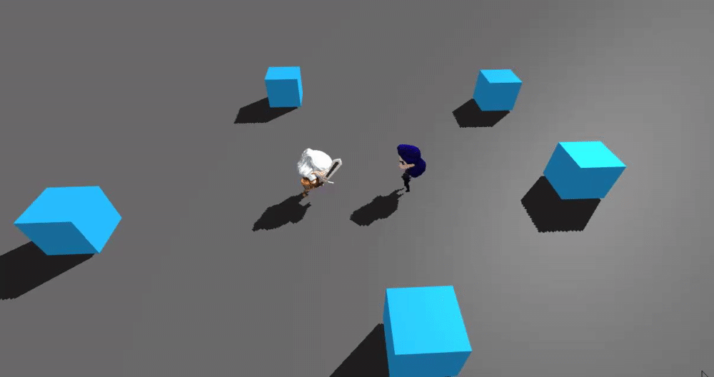
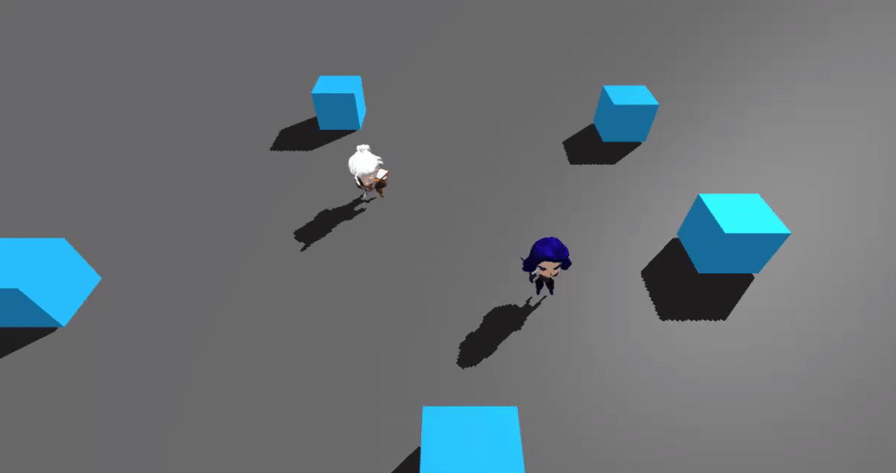
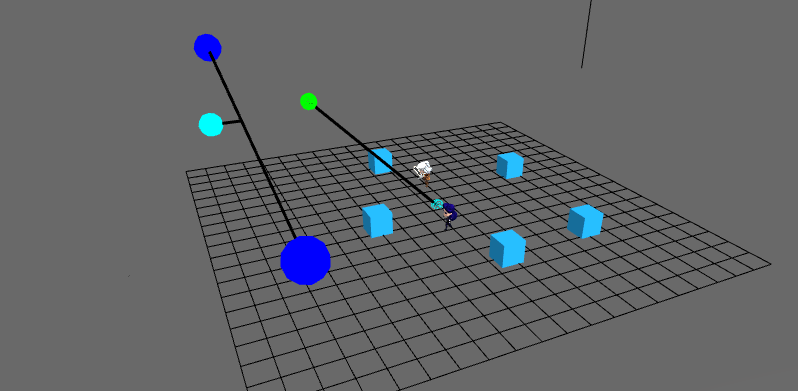
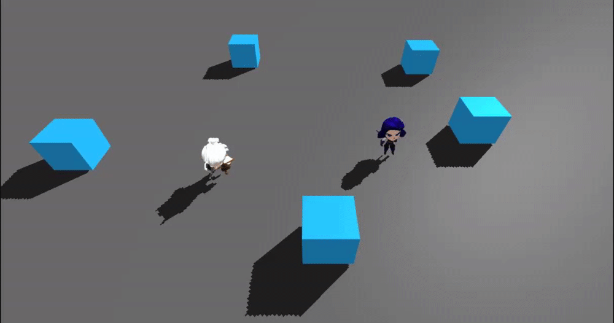
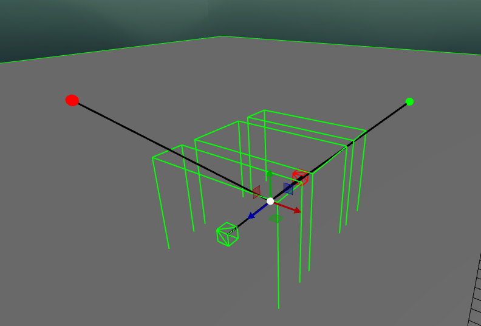
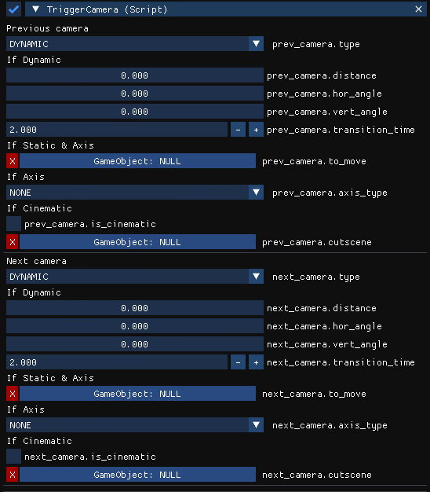
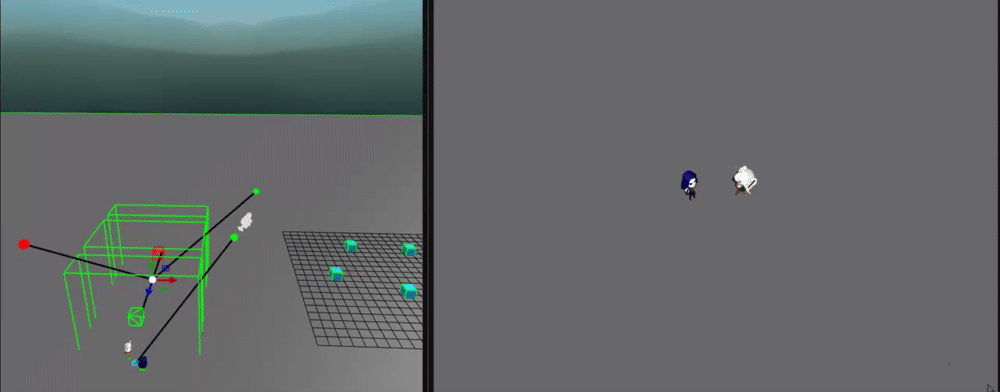

Overview
The camera is highly important in a videogame and we had to be carefull with it. The fact that our game has
two players cooperative increase the difficult. The camera has to be comfortable and safely for game logic.
In addition, the camera has to provide very good feeling. I worked in Camera System with Ivan Ropero.
Pivot
First of all, the game will have different angle cameras for every part of a map. So, I developed a
visualizer in order to let the designers know where de camera will be respect the mid point between the two
players.

Pivot moves with mid point in players.

Pivot can edit with 2 angles and a distance.

The data that the designer can manipulate.

On play, the camera will set its position on the point.
Asymptotic Average
In order to have a smooth movement and a good feeling I implemented the Asymptotic Average. It consists in
move the camera almost to the position it has to be. The result is a smooth movement. We can see the
difference here:
Static
The camera has some types: Dynamic, Static, One Axis and Cinematic. The default is the Dynamic camera and
will follow the mid point. I also create the static camera that will not move and will track always the
players.

Block movement
The players must not move out of boundings of camera. There was a problem that, even if there is a gap that
the player could move, that movement will leave the other player out of the camera, so we have to solve that.
Then we create the Free camera, that allow free movement although it has not space.

Limiter Camera
In some cases, we do not want the camera overstep a line, so I implemented a small system of a camera
limiter.

It consist in set two positions as limiters, it will draw an infinite imaginary line from one point to
another and set a direction. When the camera exceed the line, it will clam the position.

Camera Transitions
The game has multiple cameras in each scenario, so we need to transition the camera smoothly and confortable
for the players. For transitions we created a Prefab with a system to transition the camera.

The systems is conformed from three colliders that controls the direction of the movement and some visual
information to know the future camera position and the previous camera. We have some information that the
designer can set.




{kind=link}
{kind=link}
{kind=link}